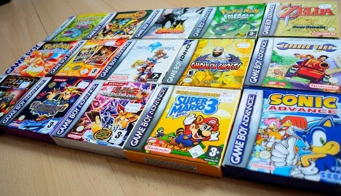

The Game Boy Advance (GBA) is a 32-bit handheld game console developed, manufactured and marketed by Nintendo as the successor to the Game Boy Color. It was released in Japan on March 21, 2001, in North America on June 11, 2001, in the PAL region on June 22, 2001, and in mainland China as iQue Game Boy Advance on June 8, 2004.
The GBA is part of the sixth generation of video game consoles. The original model was followed in 2003 by the Game Boy Advance SP, a redesigned model with a frontlit screen and clamshell form factor. A newer revision of the SP with a backlit screen was released in 2005. A miniaturized redesign, the Game Boy Micro, was released in September 2005.
As of June 2010, 81.51 million units of the Game Boy Advance series have been sold worldwide. Its successor, the Nintendo DS, was released in November 2004 and is backward compatible with Game Boy Advance software.
History
Unlike the Game Boy and Game Boy Color, which have the "portrait" form factor (designed by Gunpei Yokoi), the Game Boy Advance has a "landscape" form factor, putting the buttons to the sides of the device instead of below the screen. It was designed by the French designer Gwénaël Nicolas and his Tokyo-based design studio Curiosity Inc.
News of a successor to the Game Boy Color (GBC) first emerged at the Space World trade show in late August 1999, where it was reported that two new handheld systems were in development. On September 1, 1999, Nintendo officially announced the Game Boy Advance, revealing details about the system's specifications including online connectivity through a cellular device and an improved model of the Game Boy Camera. Nintendo teased that the handheld would first be released in Japan in August 2000, with the North American and European launch dates slated for the end of the same year. Simultaneously, Nintendo announced a partnership with Konami to form Mobile 21, a development studio that would focus on creating technology for the GBA to interact with the GameCube, Nintendo's home console which was also in development at the time with the codename Dolphin.
On August 24, Nintendo officially revealed the console to the public, with the Japanese and North American launch dates and 10 launch games. The GBA was then featured at Space World 2000 from August 24 to 26 alongside several peripherals for the system, including the GBA Link cable, the GameCube - Game Boy Advance link cable, a rechargeable battery pack for the system, and an infrared communications adaptor which would allow systems to exchange data.
In March 2001, Nintendo revealed details about the system's North American launch, including the suggested price of $99.99 and the 15 launch games. Nintendo estimated that around 60 new games would be released by the end of 2001.
Color Variants
The Game Boy Advance was available in numerous colors and limited editions throughout its production. It was initially available in:

- Artic
- Black
- Indigo
- Orange (Japan only)
- Fuchsia (translucent pink)
- Glacier (translucent blue)
Additional colors and special editions were later released, including:

- Red
- Clear Orange
- Clear Black
- Platinum
- White
- Gold (Japan only)
- Hello Kitty edition
- The King of Fighters edition
- Chobits edition
- Battle Network Rockman EXE 2
- Mario Bros. edition
- Yomiuri Giants edition
Several Pokémon-themed limited-edition systems were made available in Pokémon Center stores in Japan. These editions include:
- Gold Pokémon edition
- Suicune edition
- Celebi edition
- Latios/Latias edition
Games
With hardware performance comparable to the Super Nintendo Entertainment System, the Game Boy Advance represents progress for sprite-based technology. The system's library includes platformers, SNES-like role-playing video games, and games ported from various 8-bit and 16-bit systems of the previous generations. This includes the Super Mario Advance series, and the system's backward compatibility with all earlier Game Boy titles. Though most GBA games primarily employ 2D graphics, developers have ambitiously designed some 3D GBA games that push the limits of the hardware, including first-person shooters like a port of Doom, racing games like V-Rally 3, and even platformers, like Asterix & Obelix XXL.
Some cartridges are colored to resemble the game (usually for the Pokémon series; Pokémon Emerald, for example, being a clear emerald green). Others have special built-in features, including rumble features (Drill Dozer), tilt sensors (WarioWare: Twisted!, Yoshi's Universal Gravitation) and solar sensors (Boktai).
In Japan, the final game to be released on the system was Final Fantasy VI Advance on November 30, 2006, which was also the final game published by Nintendo on the system. In North America, the last game for the system was Samurai Deeper Kyo, released on February 12, 2008. In Europe, the last game for the system is The Legend of Spyro: The Eternal Night, released on November 2, 2007. The Japan-only Rhythm Tengoku, the first game in what would eventually become known outside Japan as the Rhythm Heaven/Rhythm Paradise series, is the final first-party-developed game for the system, released on August 3, 2006.
Best-Selling Game Boy Advance Games

- Pokémon Ruby and Sapphire
- Pokémon FireRed and LeafGreen
- Pokémon Emerald
- Mario Kart: Super Circuit
- Super Mario World: Super Mario Advance 2
- Super Mario Advance
- Super Mario Advance 4: Super Mario Bros. 3**
- Namco Museum
- Pac-Man Collection
- Yoshi's Island: Super Mario Advance 3
- The Legend of Zelda: A Link to the Past
- Pokémon Mystery Dungeon: Red Rescue Team
- NES Classics Series: Super Mario Bros.
- Wario Land 4
- Mario & Luigi: Superstar Saga
- Kirby: Nightmare in Dream Land
- Finding Nemo
- Donkey Kong Country
- The Legend of Zelda: The Minish Cap
- Yu-Gi-Oh! The Eternal Duelist Soul
**Game was bundled with Game Boy Advance consoles during its lifetime.